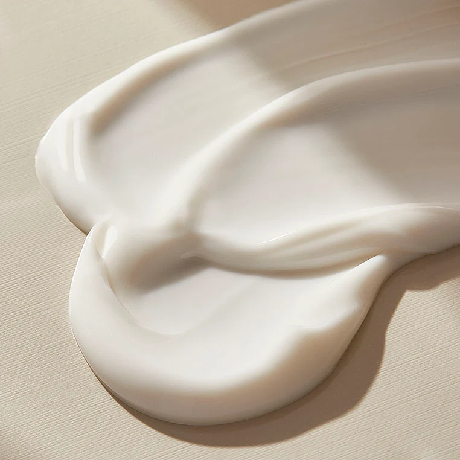
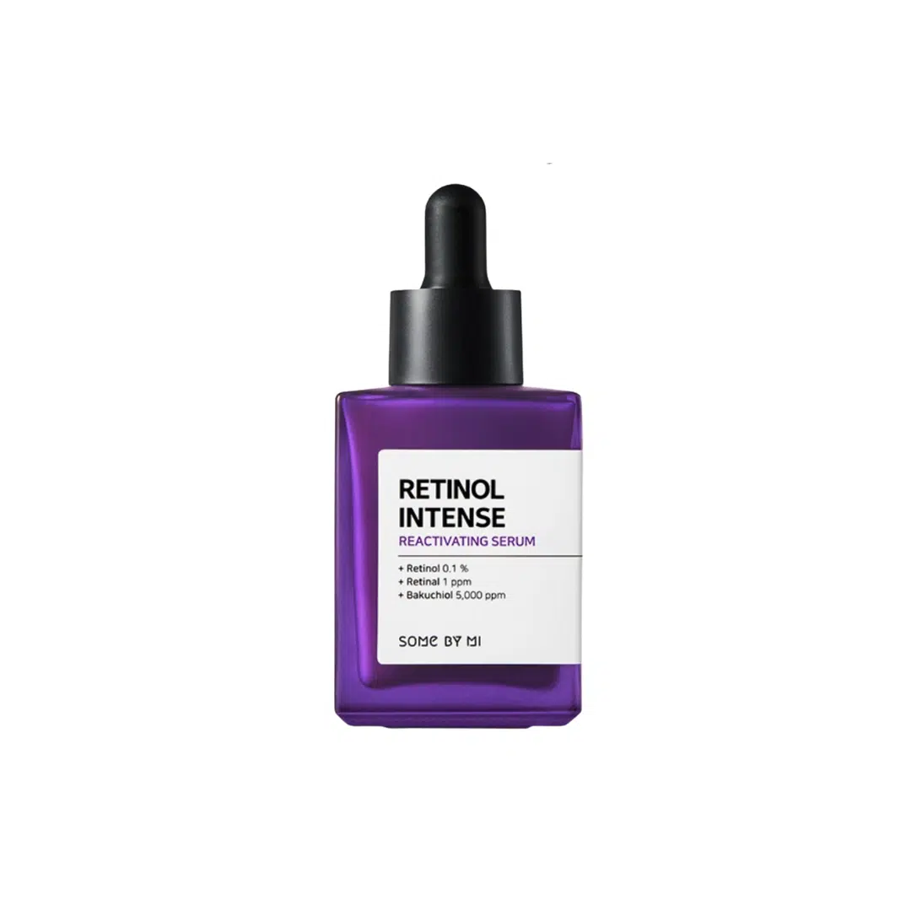
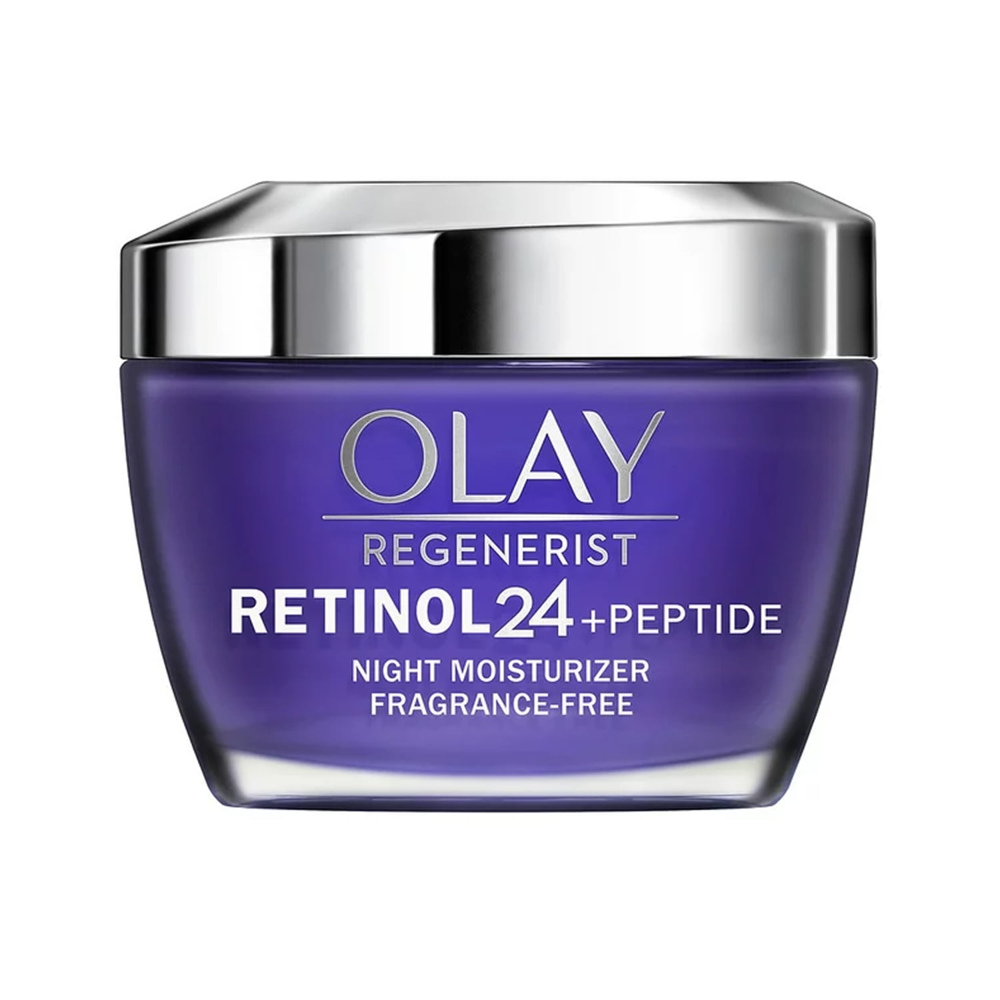
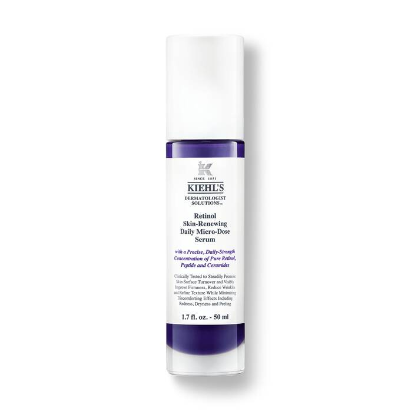
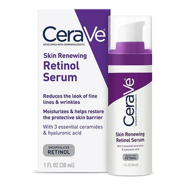

<html></html>

<head></head>
    <title>Retinol</title>
    <link rel="stylesheet" href="style.css">
</head>

<header>
    <div id="nav">
        <h1 class="title"><span>G</span>low <span>A</span>ura</h1>

        <div class="navbar">
            <a href="index.html#home"><span class="home"><p>Home</p></span></a>
            <a href="index.html#about"><span class="about"><p>About</p></span></a>
            <a href="index.html#products"><span class="products"><p>Products</p></span></a>

            <div class="searchbutton">
                <form action="about.html" class="searchbar">
                    <button type="submit" class="button" href="about.html">  </button>
                    <input class="search" type="text" placeholder="Search a product">
                </form>
            </div>
        </div>
    </div>
</header>

<body>
    <section id="product">
        <div id="productinfo">
            

            <div class="text">
                <h1>Retinol</h1>
                <p>This is a vitamin A1, is a fat-soluble vitamin in the vitamin A family that is found in food and used as a dietary supplement. Retinol or other forms of vitamin A are needed for vision, cellular development, maintenance of skin and mucous membranes, immune function and reproductive development.</p>
                <p>This help with signs of aging by simulating new cell production and getting rid of old skin cells. This is an ingredient added to skin creams, lotions and serums. It has antiaging effects and can help clear acne. Products containing retinol are widely available over the counter, and stronger concentrations of retinoids are available by prescription.</p>
            </div>
        </div>

        <div id="benefits">
            <input type="checkbox" id="trigger">
            <div class="benefittext">
                <label class="btitle" for="trigger">Benefits</label>
                    <div class="benefit">
                        <p>Scar Healing</p>
                        <p>Anti Aging</p>
                        <p>Skin Conditioning</p>
                        <p>Reduces Large Pores</p>
                    </div>
            </div>
        </div>

        <div id="recommendations">
            <div class="recoprod">
                
                <a href="https://skinsort.com/products/some-by-mi/retinol-intense-reactivating-serum"><p>Retinol Intense Reactivating Serum</p></a>
            </div>

            <div class="recoprod">
                
                <a href="https://skinsort.com/products/olay/regenerist-retinol-24-night-facial-moisturizer"><p>Regenerist Retinol Twenty Four Night Facial Moisturizer</p></a>
            </div>

            <div class="recoprod">
                
                <a href="https://skinsort.com/products/kiehl-s/micro-dose-anti-aging-retinol-serum-with-ceramides-and-peptide"><p>Micro Dose Anti Aging Retinol Serum with Ceramides and Peptide</p></a>
            </div>

            <div class="recoprod">
                
                <a href="https://skinsort.com/products/cerave/skin-renewing-retinol-serum"><p>Skin Renewing Retinol Serum</p></a>
            </div>
        </div>

        <div id="usageandstorage">
            <div class="container">
                <div class="usage">
                    <h1>Usage</h1>
                    <p>Using retinol or any retinoids will increase sun-sensitivity in the first few months. Though studies show retinoids increase your skin's natural SPF with continuous use, it is best to always wear sunscreen and sun-protection. We recommend speaking with a medical professional about using this ingredient during pregnancy.</p>
                </div>

                <div class="storage">
                    <h1>Storage</h1>
                    <p>Keep retinol in its original opaque packaging and away from direct sunlight. High humidity can degrade retinol, so you can use silica gel to absorb excess moisture. Seal products well after use to keep heat and moisture out.</p>
                </div>
            </div>
        </div>
    </section>
</body>

<footer>
    <div id="foottxt">
        <div class="contacts">
            <h2>Contact Us</h2>
            <a><p>0912-345-6789</p></a>
            <a><p>glowauraph@gmail.com</p></a>
            <a href="members.html"><p>members</p></a>
        </div>

        <a href="index.html#home"><h1 class="title"><span>G</span>low <span>A</span>ura</h1></a>
    </div>
</footer>

</html>